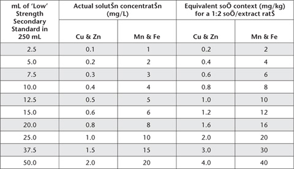

There is increasing use of micronutrient and heavy metal tests for soil fertility and resource-condition assessments. Major objectives of soil fertility tests are to separate deficient from non-deficient soils, and to indicate when a profitable response to applications of specific micronutrients might be expected. Soil tests are also used to indicate possible nutrient and heavy metal toxicities. For example, toxicities of Cu and Zn can develop from the repeated use of crop-protection fungicides based on these elements (Rayment and Brooks 1974). For recent reviews with an Australian emphasis, including examples of interpretative criteria, see Armour and Brennan (1999) for Zn, Bell (1999) for B, Brennan and Best (1999) for Cu, Brennan and Bruce (1999) for Mo, McFarlane (1999) for Fe, and Uren (1999) for Mn. Examples from Brazil have been reported by de Abreu et al. (2005).
Because micronutrients and heavy metals exist in soils in water-soluble, exchangeable, adsorbed, chelated, and complexed forms, as well as in secondary clay minerals, insoluble metal oxides and in primary minerals (Cox and Kamprath 1972; Ure and Berrow 1982), a wide range of laboratory methods are used for their determination in soils. The methods included are the DTPA test for Fe, Cu, Mn and Zn (Lindsay and Norvell 1969a, 1978); an ammonium bicarbonate-ethylenediamine tetra acetic acid (NH4HCO3/EDTA) test for Cu and Zn (Best et al. 1985); a 0.1 M HCl extraction for Cu and Zn in canelands (e.g. Reghenzani 1990); hot, aqueous CaCl2 for B (Aitken et al. 1987); and a CaCl2 extractant for extractable Mo. More details on these micronutrient soil tests (see Table 12.1 for summary details) plus comparative inter-laboratory analytical performance data (where available), are given in preambles to individual methods and in Appendix 2. Methods 12A to 12C, inclusive, were similarly coded in Rayment and Higginson (1992).
All the tests are empirically based: they are dependent on strict adherence to method specifications. It is also important at all times to avoid all sources of possible contamination. Measurement is mostly by ICPAES. Atomic absorption is an alternative for the heavy metals, a manual colorimetric option is available for soil B, and ICP-MS is preferred for Mo analysis at low concentrations.
Table 12.2. Volumes of ‘Low’ Strength Secondary Standard and consequential concentrations of ‘Low Range’ Mixed Working Standards for DTPA-extractable Cu, Zn, Mn and Fe.
